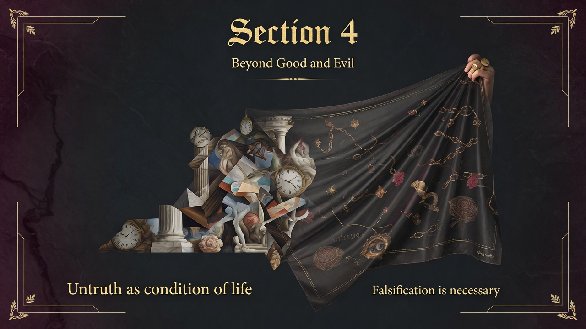

Every great philosophy is secretly the autobiography of whoever wrote it. A moral purpose—not pure curiosity—is usually what grows the whole system. Knowledge serves deeper drives; it does not lead them.
Basically: to understand the abstrusest otherworldly assertions, ask first.
Every great philosophy is the involuntary and unconscious personal story of its originator. The moral (or immoral) purpose is the true vital germ. knowledge serves the drive, not the other way around. Even the scholar’s “impulse to knowledge” is usually a small, independent clock-work subordinated to other interests.
This personalizes and radicalizes the critique of the Preface and Sections 1–5. It undercuts the pose of philosophical objectivity and sets up the will to power as the fundamental interpretive key. Later sections on the will, causality, and the noble vs. slave moralities will return to this insight: thought is always in the service of life and its commanding drives.
We still treat philosophical and scientific systems as floating free of their authors’ drives, temperaments, and power interests. Nietzsche offers a diagnostic tool: when you encounter a grand system, ask what impulse it serves and what mode of life it would install as sovereign. The free spirit reads philosophies as symptoms before accepting them as truths.
